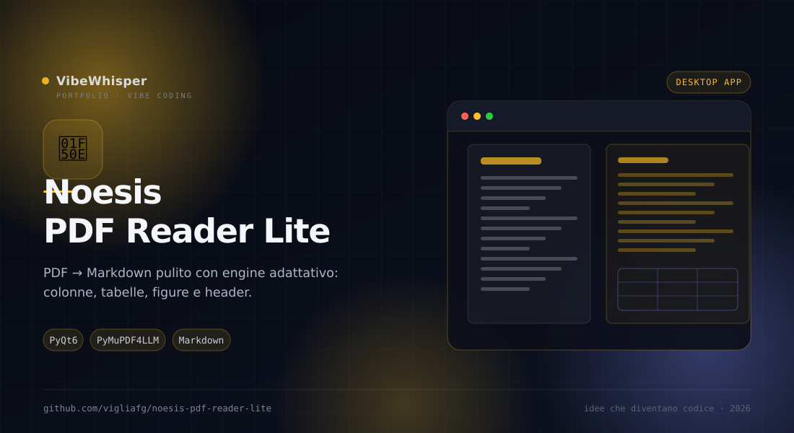

Noesis PDF Reader Lite
Versione essenziale di Noesis PDF Reader: pagina a sinistra, testo estratto in Markdown a destra, con l'engine adattativo dei fix di layout sempre attivo.
📖 Cos'è
Noesis PDF Reader Lite è la versione semplificata di Noesis PDF Reader: un solo motore di rendering (PyMuPDF), un solo motore di estrazione (PyMuPDF4LLM) e l'engine adattativo dei fix di layout sempre attivo. Apri un PDF e vedi a sinistra la pagina renderizzata, a destra il testo estratto in Markdown. L'engine sceglie da solo il piano di correzioni per ogni pagina: riordino colonne, tabelle, figure, header/footer, titoli e spaziature. Puoi anche disegnare zone di esclusione o inclusione per guidare l'estrazione, catturare oggetti e tradurre il testo.
👤 A chi serve
È pensata per ricercatori, studenti e professionisti che devono trasformare PDF complessi in testo pulito da riusare: paper a due o tre colonne, manuali con tabelle e figure, dispense, report. È utile a chi prepara materiale per un LLM, per un archivio ricercabile o per un'edizione EPUB, e a chi vuole tradurre pagina per pagina mantenendo il riferimento visivo all'originale.
⚙️ Come funziona
Per ogni pagina l'engine analizza il layout e sceglie un profilo, poi applica una pipeline di fix raggruppata in pack: pulizia Markdown, tabelle, figure, leggibilità, layout difficili e casi limite. I fix sono configurabili da fix_rules.json e ogni passaggio è reversibile. Le correzioni a livello documento deduplicano header e footer per frequenza e allineano la gerarchia dei titoli all'indice. Se una pagina è problematica, il motore ricade sulla pipeline classica solo per quella pagina, senza peggiorare il risultato. La tab Oggetti raccoglie immagini, tabelle e testi catturati, esportabili singolarmente o in blocco.
🎯 Perché Noesis PDF Reader Lite
Perché estrarre testo da un PDF non significa buttare fuori le righe nell'ordine in cui compaiono nel file. Noesis PDF Reader Lite ricostruisce l'ordine di lettura e ti mostra il risultato accanto alla pagina, così puoi verificare subito se il Markdown è davvero utilizzabile.
✨ Caratteristiche Principali
- Vista affiancata — Pagina originale a sinistra, Markdown a destra, sempre confrontabili
- Engine adattativo — Profilo, piano e pipeline scelti automaticamente per ogni pagina
- Tabelle ricostruite — Griglia da
find_tables, didascalie su riga propria, celle vuote e colonne fantasma rimosse - Figure e didascalie — Quando c'è una didascalia
FIG n, la figura diventa corpo unico più didascalia e entra nella gallery - Header e footer — Riconosciuti per frequenza tra le pagine e rimossi anche quando il Markdown li traveste da titolo
- Zone manuali — Escludi header, footer o immagini; includi regioni numerate per definire l'ordine di lettura
- Tab Oggetti — Immagini, tabelle e testi catturati con filtri, conteggio ed export in blocco
- Traduzione — Motori Google o Microsoft, con cache su disco per pagina e lingua
- Export batch — Wizard in 5 passi: pagine, contenuto, lingue, formato (MD/HTML/testo/EPUB/e altro) e impacchettamento
🏗️ Come Funziona
- Apri un PDF: l'engine analizza la pagina e mostra il Markdown a destra
- Controlla il risultato e, se serve, disegna zone rosse (escludi) o verdi (includi e ordina)
- Usa la tab Oggetti per catturare immagini, tabelle e testi
- Traduci la pagina o attiva il rendering Markdown con il pulsante 📝 MD
- Apri 💾 Esporta e scegli pagine, contenuto, formato e impacchettamento
- A fine export trovi i file nella cartella scelta, con suffisso
-translatedper le versioni tradotte
📦 Installazione
# Requisiti: Python 3.10+ git clone https://github.com/vigliafg/noesis-pdf-reader-lite.git cd noesis-pdf-reader-lite python3 -m venv .venv .venv/bin/pip install -r requirements.txt .venv/bin/python main.py # oppure: ./run.sh # I formati Word/ODT/RTF/LaTeX usano pandoc: # se manca, l'app propone di scaricarlo al primo export
💡 Casi d'Uso
- Paper scientifici — Estrarre testo e tabelle da PDF a due o tre colonne senza perdere l'ordine
- Archivio ricercabile — Convertire una cartella di documenti in Markdown indicizzabile
- Preparazione per LLM — Ottenere testo pulito e figure referenziate da dare in pasto a un modello
- Studio e traduzione — Leggere l'originale e la traduzione pagina per pagina, con cache